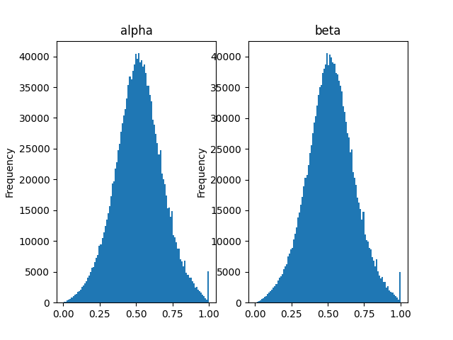
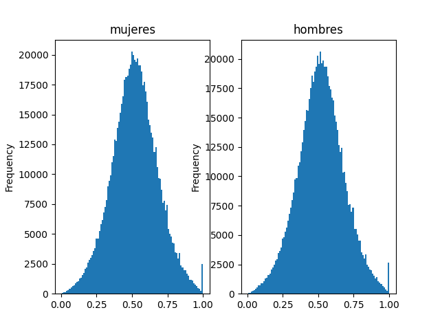
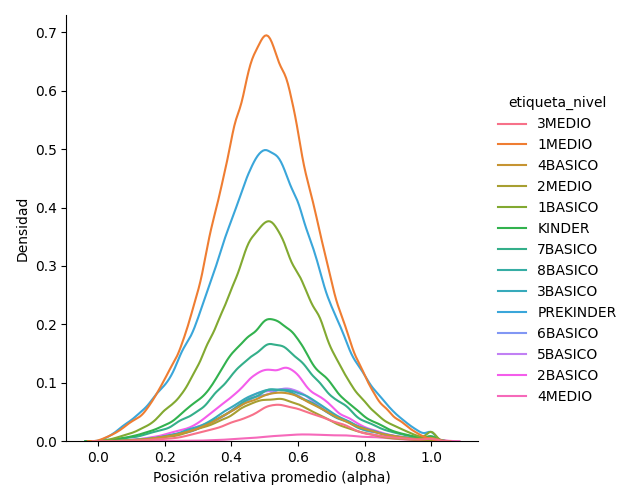
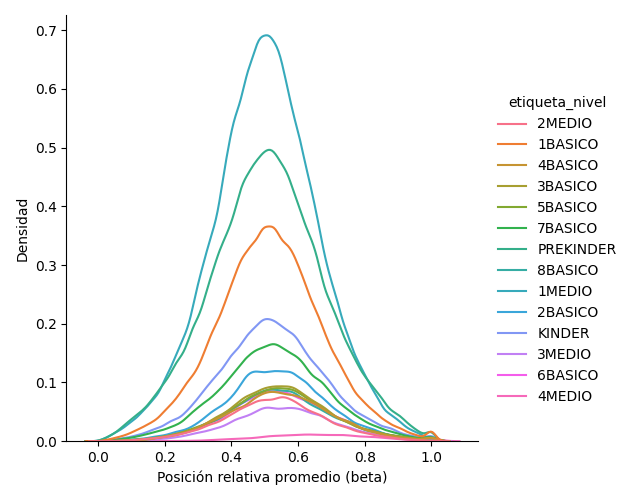

Para cada postulante, se obtiene la posición relativa en la queda ordenado en cada una de sus preferencias en base a la variable detalle_ordenamiento.numero. La siguiente figura muestra la distribución del promedio de la posición relativa para cada estudiante. Se espera que esta distribución siga una distribución normal para cada uno de los ordenamientos (alpha y beta). Adicional se obtiene la correlación entre la serie ALPHA y BETA, con un valor de 0.0005553293165336695.
 La siguiente figura muestra a demás la densidad de la posición relativa promedio de cada estudiante según su nivel. Si existe aleatoriedad se espera que esta se asemeje a una normal.
 
La siguiente tabla muestra los test de medias sobre el promedio de la posición relativa para ciertos grupos. Debido a que el sexo es una característica exógena, se espera que no sea posible rechazar la hipótesis nula de que la posición relativa promedio de hombres es igual a la posición relativa promedio de mujeres, es decir, que se obtenga un p-value mayor a 0.01. Por otro lado, se espera que esto no ocurra para hermanos ni para postulantes en bloque, ya que se produce una propagación del número aleatorio debido a la prioridad de hermano dinámica y a la postulación en bloque.
| pval para alpha | pval para beta | |
|---|---|---|
| Género | 7.850157e-01 | 3.415528e-01 |
| Hermanos | 1.685019e-137 | 7.264490e-165 |
| Bloques | 2.079773e-70 | 6.183450e-93 |
| Prioritarios | 2.002574e-62 | 1.515423e-76 |